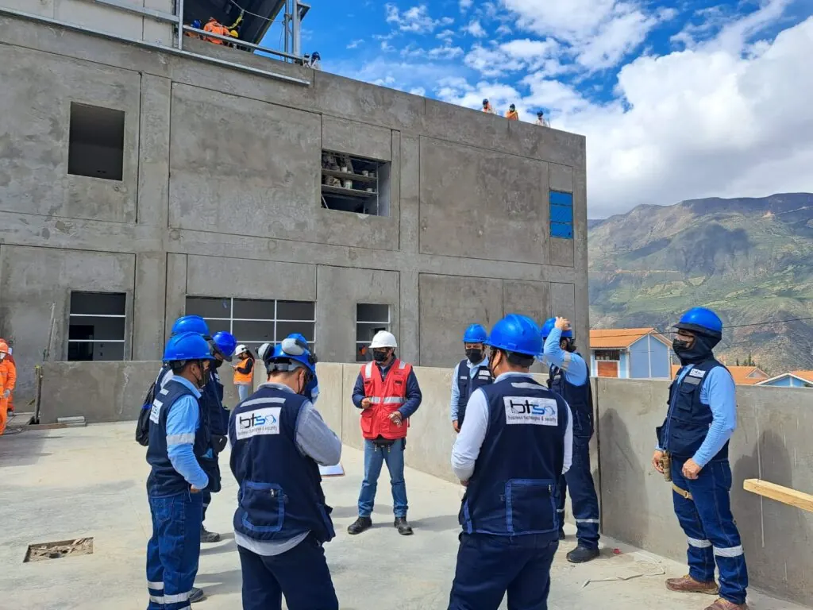
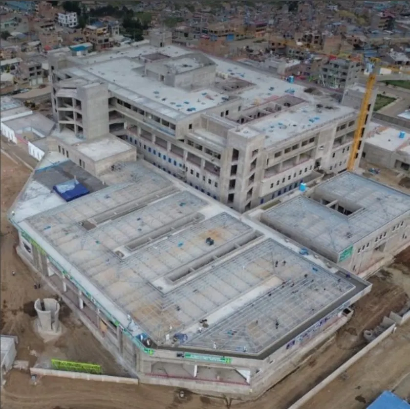
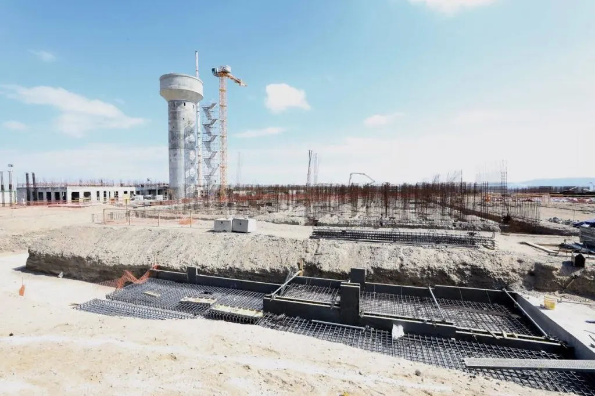
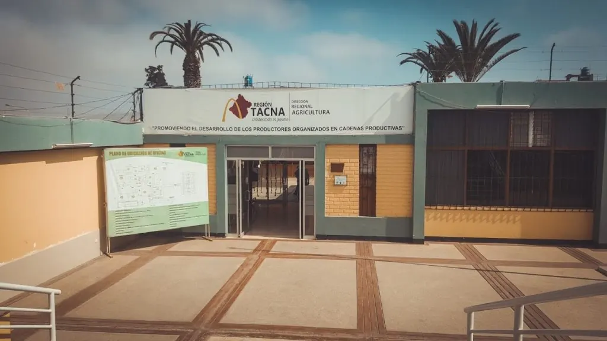

SALUD / ÁNCASH
Hospital de Yungay
Implementación e instalación de sistemas de comunicaciones y TI.
NIVEL II-1TECNOLOGÍA QUE HACE POSIBLE SU OBRA
Integramos los sistemas que su proyecto necesita para funcionar. De la ingeniería a la puesta en marcha, con un solo responsable.

SALUD · PUNO
Salud · Industria · Empresas · Sector público
01 / CAPACIDADES
Diseñamos cómo se conecta cada sistema con el siguiente. Despliegue cada área para conocer sus sistemas.
Visibilidad, identificación y control para proteger personas e instalaciones.
La infraestructura sobre la que opera y crece su organización.
Información y comunicación al servicio de las personas.
Protección, energía y confort integrados en su infraestructura.
Evaluación y protección de la información que sostiene su operación.
Una base técnica clara para construir y gestionar mejores edificios.
02 / EXPERIENCIA EN CAMPO
Participamos en proyectos de salud, seguridad e infraestructura pública en el Perú.

SALUD / ÁNCASH
Implementación e instalación de sistemas de comunicaciones y TI.
NIVEL II-1
PENITENCIARIO / ICA
Expediente técnico de seguridad y comunicaciones.

SECTOR PÚBLICO / TACNA
Videovigilancia y radioenlace entre sedes.
Hospital del Altiplano Puno
Centro de Reposo San Juan de Dios Piura
Hospital de Contingencia de Matucana Lima
03 / UN SOLO EQUIPO
Expediente técnico, memorias, planos y modelamiento BIM de las especialidades.
Equipos, montaje y cableado con personal especializado en obra.
Medición y certificación del cableado y la fibra antes de su entrega.
Configuración, pruebas con el usuario y atención después de la entrega.
04 / BUSINESS TECHNOLOGIES & SECURITY
Somos una empresa peruana de TIC, seguridad electrónica y automatización.
Desde 2012 trabajamos con constructoras, integradores y entidades públicas. Acompañamos cada etapa con una visión integral: diseñar, implementar y poner en marcha.
CLIENTES
Cisco · Huawei · Axis · Hikvision · Avigilon · Genetec · Panduit · Siemon · APC · Schneider · Notifier · Yealink
EL SIGUIENTE PASO
Conversemos sobre sus especialidades, el alcance y la etapa de su obra.
Conversar por WhatsApp ↗ (abre otra pestaña)Av. Benavides 1901, Int. 401
Miraflores, Lima, Perú
Lunes a viernes · 8:30 a 19:10